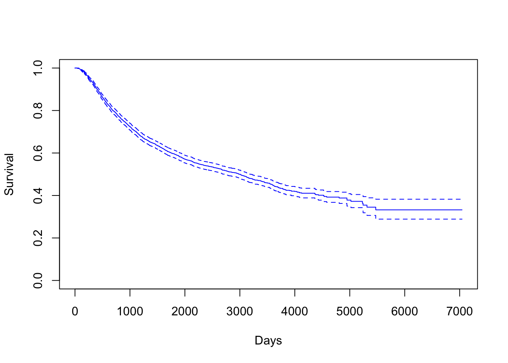
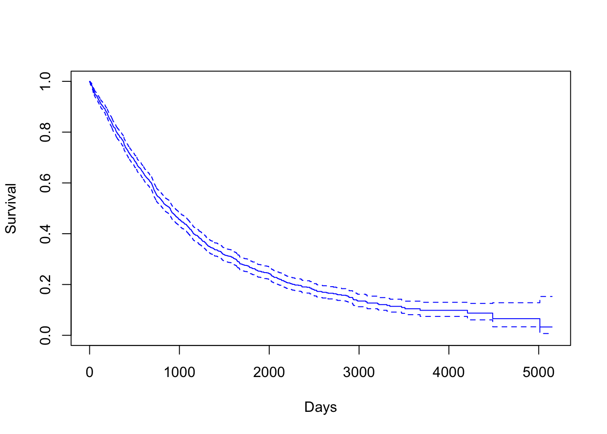

3.2 Kaplan-Miere estimator of the entire dataset
Death Time
KM <- survfit(Surv(dtime, death) ~ 1, data = rotterdam)
plot(KM, conf.int = TRUE, col = "blue", xlab="Days", ylab="Survival")
mean(rotterdam$dtime)## [1] 2605.34median(rotterdam$dtime)## [1] 2638.5The overall mean survival time till death for breast cancer is 2605 days, which is approximately 7 years. The overall median survival time till death for breast cancer is 2638 days, which is also approximately 7 years.
Recurrence Time
KM <- survfit(Surv(rtime, recur) ~ 1, data = rotterdam)
plot(KM, conf.int = TRUE, col = "blue", xlab="Days", ylab="Survival")
mean(rotterdam$rtime)## [1] 2097.903median(rotterdam$rtime)## [1] 1940The overall mean survival time till recurrence for breast cancer is 2097 days, which is approximately 6 years. The overall median survival time till recurrence for breast cancer is 1940 days, which is also approximately 5 years.
KM <- survfit(Surv(drecurtime, death) ~ 1, data = rotterdam_recur)
plot(KM, conf.int = TRUE, col = "blue", xlab="Days", ylab="Survival")
mean(rotterdam_recur$drecurtime)## [1] 978.5481median(rotterdam_recur$drecurtime)## [1] 719.5The overall mean survival time after rucurrence till death for breast cancer is 834 days, which is approximately a little more than 2 years. The overall median survival time after rucurrence till death for breast cancer is 625 days, which is approximately less than 2 years.
Since a Kaplan-Miere estimator is unbiased, we could view the median as being very close to the true value of survival time.